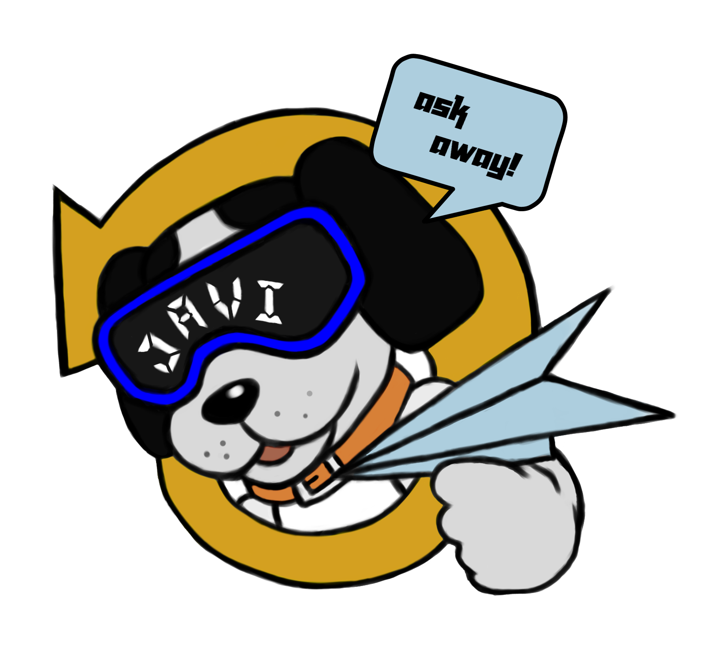

JAVI

JAVI
An Information Chatbot for Garcia College of Technology.
JAVI is an easy to learn and easy to use chatbot.
Just follow these 6 easy steps!


Get to know more about us!
Hi! I’m John Rhay Javier, the project manager and programmer of Javi. I’m a 4th-year Computer Science student at Garcia College of Technology. I like playing around with AI, API Integrations, and Web Development. Javi is the compilation of our 4 years' worth of education and will serve as my (our) final requirement for our program. Thank you for trying out Javi, we hope that you’ve enjoyed your experience using our chatbot.
Hi! i'm Phile Joseph Posadas, the Technical writer for Javi. I'm a 4th-year Computer Science At Garcia College of Technology. I do diagrams to show users how a product works, prepare instruction manuals, how-to guides, journal articles, and other supporting documents to communicate complex and technical information more easily. Thank you for trying javi, we hope that you've enjoyed your experience using our chatbot.
Hi I'm John Vince Tampos, the QA Tester of Javi. I'm a 4th year Information Technology student at Garcia College of Technology. Javi is the complition of 4 year's worth of education and will serve as final requirements for our program. Thank you for trying javi, we hope that you enjoyed your experience using our chatbot.